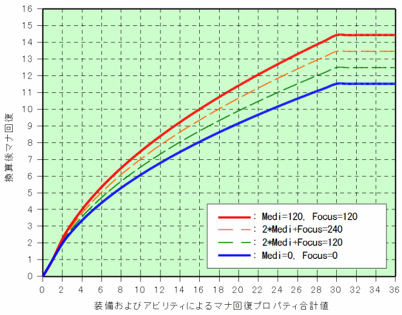

マナ回復計算
各項目の説明
- 種族 ： 人間、エルフまたはガーゴイルより選択します。人間の場合、入力スキル＝0.0でも20.0として計算されます。
- Focus ： Focus（集中）スキル値を入力します。
- Meditation ： Meditation（瞑想）スキル値を入力します。
- INT ： INTステータス値を入力します。Manaではありませんので注意してください。
- 能動瞑想可／不可 ： 瞑想スキルを使い瞑想状態に入ることができるかどうか選択します。
- 種族特性よるマナ回復 ： ガーゴイルを選択している場合、マジックプロパティに相当するマナ回復2が加算されます。
- 装備品およびアビリティ合計 ： 装備品およびアビリティに付加される「マナ回復」の合計を入力します。
- 全マナ回復合計 ： キャラクターの初期値にFocus、Meditationおよび装備品等による補正後マナ回復の合計値が表示されます。
ここで小数以下の端数は切捨となるよう修正しました。
- マナ回復に要する時間 ： 上記の全マナ回復合計を使い、任意のマナを回復させるための時間（0.01sec単位切上）を計算します。
マナ回復値の算出（最終版）
- 種族に関係なく、マナ回復2が与えられている。
- Focusによるマナ回復値
マナ回復値＝(Focus) / 20
- Meditation, INTによるマナ回復値
マナ回復値＝A×B×{3×(Meditation)＋(INT)} / 40
A ： キャラクターの装備および状態による係数
- 瞑想不可 ： A＝0
- 瞑想可（平穏時） ： A＝1
- 瞑想可（瞑想時） ： A＝2
B ： Meditationスキルによる係数
- Meditationスキルが100未満 ： B＝1.0
- Meditationスキルが100以上 ： B＝1.1
- 装備品およびアビリティによる補正後のマナ回復値
補正後マナ回復値＝(2.35＋0.65×C)×sqrt(補正前マナ回復値)−(1.35＋0.65×C)
C ： {2×(Meditation)＋(Focus)}/360
修正前は、(7/3＋2/3×C)×sqrt(補正前マナ回復値)−(4/3＋2/3×C)としていました。

2×(Meditation)＋(Focus)の値によって補正後のマナ回復値がグラフのように変化します。